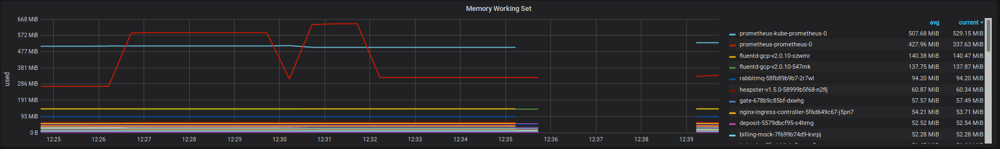
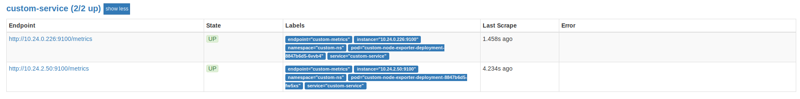

Kubernetes Prometheus Operator
19 Jun 2018Содержание
В данной статье описано, как установить, обеспечить работоспособность и настроить Prometheus Operator в кластере GCE. Большая часть статьи применима независимо от места развертывания кластера k8s.
Следует учитывать, что статья написана в процессе ознакомления с Kubernetes и мониторингом кластера, поэтому многие инструкции могут быть неоптимальными, несовместимыми с использованием в production, либо просто некорретными.
Установка (helm)
Предварительные изменения
1) Отключение ssl для сбора метрик kubelet:
https: false
2) Изменение порта и url для получения метрик cadvisor:
- port: http-metrics
interval: 15s
- port: http-metrics
path: /metrics/cadvisor
interval: 30s
honorLabels: true
3) Изменение репозитория helm для установки kube-prometheus на локальный:
sed -ie 's/ repository/# repository/g' helm/kube-prometheus/requirements.yaml
sed -ie 's/#e2e-repository/repository/g' helm/kube-prometheus/requirements.yaml
helm dependency update helm/kube-prometheus/
4) Изменение datasource в Grafana на корректный:
prometheus-datasource.json: |+
{
"access": "proxy",
"basicAuth": false,
"name": "prometheus",
"type": "prometheus",
"url": "http://prometheus:9090"
}
5) Подключение alertmanager к prometheus:
alertingEndpoints:
- name: alertmanager
namespace: monitoring
port: http
scheme: http
Установка
git clone https://github.com/coreos/prometheus-operator.git && cd prometheus-operator
helm install --name prometheus-operator --set rbacEnable=true --namespace=monitoring helm/prometheus-operator --tls
helm install --name prometheus --set serviceMonitorsSelector.app=prometheus --set ruleSelector.app=prometheus --namespace=monitoring helm/prometheus --tls
helm install --name alertmanager --namespace=monitoring helm/alertmanager --tls
helm install --name grafana --namespace=monitoring helm/grafana --tls
helm install --name kube-prometheus --namespace=monitoring helm/kube-prometheus --tls
Примеры использования
Добавление своего dashboard в Grafana
Существует несколько способов добавления dashboard в Grafana. Более правильный описан в документации (helm/grafana/README.md) и подразумевает создание отдельного ConfigMap и вынос custom dashboard’ов в отдельную директорию.
Более простой способ - скопировать json файл с dashboard, импортированный из Grafana, в директорию helm/grafana/dashboards, обернув его в следующий код (необходимо для работы Grafana Watcher):
{
"dashboard":
<-- initial code -->,
"inputs": [
{
"name": "DS_PROMETHEUS",
"pluginId": "prometheus",
"type": "datasource",
"value": "prometheus"
}
],
"overwrite": true
}
Добавление custom alerts
Существует несколько способов добавления оповещений. Также в репозиторий включен набор преднастроенных оповещений (contrib/kube-prometheus/manifests/prometheus-rules.yaml)
Для того, чтобы включились встроенные оповещения, необходимо сделать следующие вещи:
1) Корректно выставить labels в манифесте, содержащем правила, для того, чтобы подпадать под ruleSelector:
metadata:
labels:
prometheus: prometheus
role: alert-rules
2) Применить манифест:
kubectl apply -n monitoring -f contrib/kube-prometheus/manifests/prometheus-rules.yaml
3) Возможно отредактировать конфигурацию самого ruleSelector:
ruleSelector:
matchLabels:
role: alert-rules
prometheus: prometheus
4) Обновить конфигурацию prometheus:
helm upgrade prometheus helm/prometheus --tls
Существует другой, более простой способ:
1) Переопределить в values.yml ruleSelector, например:
rulesSelector: {
matchLabels: {
role: alert-rules
}
}
2) Обновить конфигурацию prometheus:
helm upgrade prometheus helm/prometheus --tls
Соответственно, для того, чтобы заработало свое правило оповещения, необходимо создать манифест следующего вида и применить его:
apiVersion: monitoring.coreos.com/v1
kind: PrometheusRule
metadata:
labels:
role: alert-rules
name: custom-prometheus-rules
namespace: monitoring
spec:
groups:
- name: custom.rules
rules:
<-- rules -->
Пример правила оповещения:
apiVersion: monitoring.coreos.com/v1
kind: PrometheusRule
metadata:
labels:
role: alert-rules
name: custom-prometheus-rules
namespace: monitoring
spec:
groups:
- name: custom.rules
rules:
- alert: KubernetesTooManyRunningPods
annotations:
message: "Too many running pods on the node `}}."
expr: |
kubelet_running_pod_count > 15
for: 1m
labels:
severity: warning
Пример добавления правила оповещения:
kubectl apply -n monitoring -f custom/prometheus-rules/custom-prometheus-rules.yaml
Persistent storage
Рассматривается развертывание с использование своего StorageClass prometheus-ssd-sc (одна зона, ssd, отсутствие репликации). Манифест для storageClass:
kind: StorageClass
apiVersion: storage.k8s.io/v1
metadata:
name: prometheus-ssd-sc
provisioner: kubernetes.io/gce-pd
parameters:
type: pd-ssd
zone: europe-west3-a
Для того, чтобы подключить данный sc в prometheus, необходимо раскомментировать и заполнить секцию storageSpec в файле values.yaml:
storageSpec:
volumeClaimTemplate:
spec:
selector:
matchLabels:
namespace: monitoring
accessModes: [ "ReadWriteOnce" ]
storageClassName: prometheus-ssd-sc
resources:
requests:
storage: 2Gi
Работа pv проверена путем удаления prometheus helm release и его последующей установкой. Данные из pv при этом не теряются.
Время хранения метрик задается в файле /helm/prometheus/values.yaml в переменной retention. По умолчанию prometheus хранит метрики 24 часа.
Пример графика потребления RAM, разделенного по pod (в период отсутствия метрик helm release prometheus был полностью удален из k8s): 
Отправка уведомлений
Для отправки уведомлений (в примере - отправка на почту), необходимо привести конфигурацию values.yaml к аналогичному виду:
config:
global:
resolve_timeout: 5m
smtp_smarthost: <smtp-server>
smtp_from: <smtp-from>
smtp_auth_username: <smtp-username>
smtp_auth_password: <smtp-password>
route:
group_by: ['job']
group_wait: 30s
group_interval: 5m
repeat_interval: 12h
receiver: <receiver-name>
receivers:
- name: <receiver-name>
email_configs:
- to: <target@e-mail.address>
Ingress
Типовой Ingress для любого сервиса настраивается в файле values.yaml данного сервиса. На примере grafana:
ingress:
enabled: true
hosts:
- grafana.example.com
Мониторинг сервисов внутри pod
Описание
Задача - получать в prometheus метрики с exporters, запущенных внутри pod. При изменениях prometheus должен автоматически узнавать о них.
Для демонстрации в namespace custom-ns создан deployment из двух pod с prometheus node-exporter.
Решается задача при помощи двух сущностей.
1) Service - связывает конфигурацию pod и ServiceMonitor;
2) ServiceMonitor - связывает конфигурацию Service и prometheus.
После настройки данных сущностей, для любого сервиса, находящегося в namespace custom-ns и имеющего метку custom-node-exporter, prometheus будет пытаться забрать метрики с порта 9100 (node-exporter)/
Пример targets в prometheus: 
Конфигурации
apiVersion: apps/v1
kind: Deployment
metadata:
name: custom-node-exporter-deployment
spec:
selector:
matchLabels:
app: custom-node-exporter
replicas: 2
template:
metadata:
labels:
app: custom-node-exporter
spec:
containers:
- name: node-exporter
image: prom/node-exporter
ports:
- containerPort: 9100
apiVersion: monitoring.coreos.com/v1
kind: ServiceMonitor
metadata:
name: custom-servicemonitor
labels:
app: custom-node-exporter
prometheus: kube-prometheus
spec:
selector:
matchLabels:
app: custom-node-exporter
namespaceSelector:
matchNames:
- custom-ns
endpoints:
- port: custom-metrics
path: /metrics
interval: 10s
honorLabels: true
apiVersion: v1
kind: Service
metadata:
name: custom-service
labels:
app: custom-node-exporter
spec:
selector:
app: custom-node-exporter
ports:
- name: custom-metrics
protocol: TCP
port: 9100
targetPort: 9100